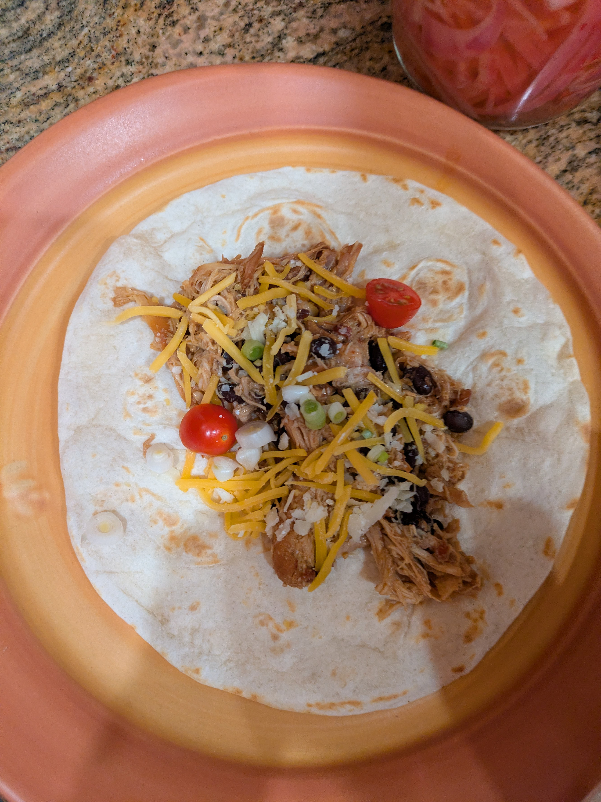

Photo Taken by Cameron Temin
Description
This recipe is much more simple than the spaghetti one. It was created my my dad and eventully I will inherit the title of Burrito Master. Just like my mom's spaghetti, this meal is made very often and is a joy every time. "I have honed this recipe over two decades and believe it has reached perfection," my dad commented on his masterpiece
Prep Time: 25-35 Minutes. Serving Size: 5-6 People depending on Appetite
| Step | Ingrediant | Qunatity |
|---|---|---|
| 1 | Cook Beef in 10-Inch Skittlet Over Medium Heat for 6-7 Minutes | 1 lb Beef |
| 2 | Stir in Water | 3/4 Cup of Water |
| 3 | Add Old El Paso Taco Seasoning Mix | Whole Pack |
| 4 | Simmer for 3-4 Minutes Until Thickend and Set Aside | |
| 5 | Put Water in a Pot | 1 and 2/3 Cups |
| 6 | Put Olive Oil with Water and Boil | 1 Tablespoon |
| 7 | Stir in Mahatma Rice Mix and Simmer for 20 Minutes | Whole Package |
| 8 | Cut Tomatoes and Cucumbers and Grate Cheese | As Much as You Like |
| 9 | Heat Up Tortilla in Mictrwave | |
| 10 | Put All Ingrediants Together | |
| Add Condements To Your Desire | ||
| Bon Appetit! | ||